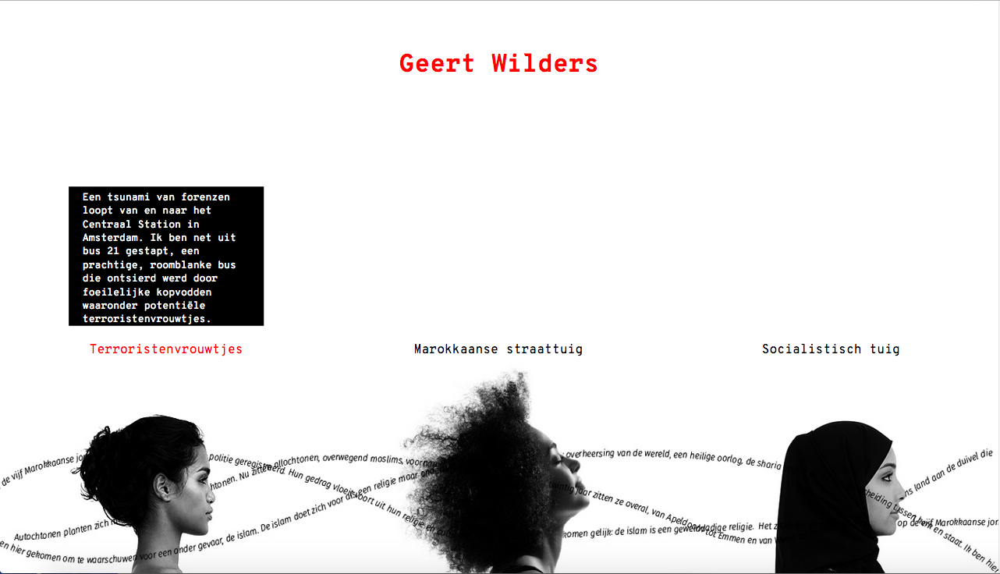
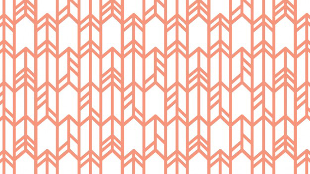

- Rood
- Oranje
- Geel
- Groen
- Turqois
- Blauw
- Paars
- Roze
- Zwart
Blauw
Geert Wilders
Een tsunami van forenzen loopt van en naar het Centraal Station in Amsterdam. Ik ben net uit bus 21 gestapt, een prachtige, roomblanke ...
Lees verderBlauw

Geert Wilders
hallo, dit is de intro van het verhaal. Op dit moment is het 3 uur snachts op een vrijdag. Ik had ook uit kunnen gaan en me lam kunnen zuipen.
Lees verderBlauw
Alzheimer
hallo, dit is de intro van het verhaal. Op dit moment is het 3 uur snachts op een vrijdag. Ik had ook uit kunnen gaan en me lam kunnen zuipen.
Lees verderBlauw
Alzheimer
hallo, dit is de intro van het verhaal. Op dit moment is het 3 uur snachts op een vrijdag. Ik had ook uit kunnen gaan en me lam kunnen zuipen.
Lees verder